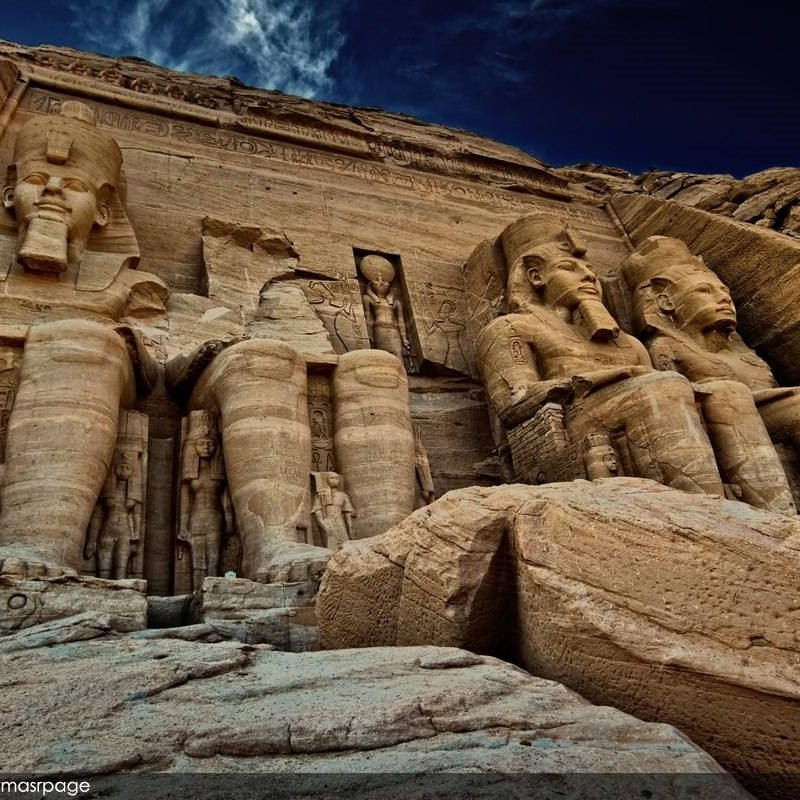

Abu Simbel temples
The Abu Simbel temples are two massive rock temples at Abu Simbel (Arabic: أبو سمبل), a village in Nubia, southern Egypt, near the border with Sudan. They are situated on the western bank of Lake Nasser, about 230 km southwest of Aswan (about 300 km by road). The complex is part of the UNESCO World Heritage Site known as the "Nubian Monuments",[1] which run from Abu Simbel downriver to Philae (near Aswan). The twin temples were originally carved out of the mountainside in the 13th century BC, during the 19th dynasty reign of the Pharaoh Ramesses II. They serve as a lasting monument to the king and his queen Nefertari, and commemorate his victory at the Battle of Kadesh. Their huge external rock relief figures have become iconic
History
construction Construction of the temple complex started in approximately 1264 BC and lasted for about 20 years, until 1244 BC. Known as the "Temple of Ramesses, beloved by Amun" it was one of six rock temples erected in Nubia during the long reign of Ramesses II. Their purpose was to impress Egypt's southern neighbours, and also to reinforce the status of Egyptian religion in the region.
Rediscovery
With the passage of time, the temples fell into disuse and eventually became covered by sand. By the 6th century BC, the sand already covered the statues of the main temple up to their knees. The temple was forgotten until 1813, when Swiss orientalist Jean-Louis Burckhardt found the top frieze of the main temple. Burckhardt talked about his discovery with Italian explorer Giovanni Belzoni, who travelled to the site, but was unable to dig out an entry to the temple. Belzoni returned in 1817, this time succeeding in his attempt to enter the complex. A detailed early description of the temples, together with contemporaneous line drawings, can be found in Edward William Lane's Description of Egypt (1825–1828).[2]
Relocation
In 1959, an international donations campaign to save the monuments of Nubia began: the southernmost relics of this ancient human civilization were under threat from the rising waters of the Nile that were about to result from the construction of the Aswan High Dam. One scheme to save the temples was based on an idea by William MacQuitty to build a clear fresh water dam around the temples, with the water inside kept at the same height as the Nile. There were to be underwater viewing chambers. In 1962 the idea was made into a proposal by architects Jane Drew and Maxwell Fry and civil engineer Ove Arup.[3] They considered that raising the temples ignored the effect of erosion of the sandstone by desert winds. However the proposal, though acknowledged to be extremely elegant, was rejected. The salvage of the Abu Simbel temples began in 1964 by a multinational team of archeologists, engineers and skilled heavy equipment operators working together under the UNESCO banner; it cost some USD $40 million at the time (equal to $300 million in 2017 dollars). Between 1964 and 1968, the entire site was carefully cut into large blocks (up to 30 tons, averaging 20 tons), dismantled, lifted and reassembled in a new location 65 meters higher and 200 meters back from the river, in one of the greatest challenges of archaeological engineering in history.[4] Some structures were even saved from under the waters of Lake Nasser. Today, a few hundred tourists visit the temples daily. Guarded convoys of buses and cars depart twice a day from Aswan, the nearest city. Many visitors also arrive by plane at an airfield that was specially constructed for the temple complex. The complex consists of two temples. The larger one is dedicated to Ra-Harakhty, Ptah and Amun, Egypt's three state deities of the time, and features four large statues of Ramesses II in the facade. The smaller temple is dedicated to the goddess Hathor, personified by Nefertari, Ramesses's most beloved of his many wives.[5] The temple is now open to the public.